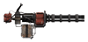
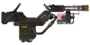
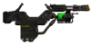
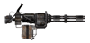

На главную Оружие Об игре Купить в Steam
На главную Оружие Об игре Купить в Steam
| Место в топе | Фото | Название | Урон | Урон в секунду | Боеприпасы | Обойма | Стоймость | Требования к навыкам |
| 1 |  | CZ57 "Авенджер" | 12 | 360 | 5-мм патрон | 120 | 8500 | Оружие:0, Сила:10 |
| 2 |  | ФИДО | 36 | 252 | Патрон кал.44 "Магнум" | 50 | 9500 | Оружие:85, Сила:9 |
| 3 |  | Киберпес К9000 | 26 | 182 | Патрон кал.357 "Магнум" | 50 | 7500 | Оружие:75, Сила:8 |
| 4 |  | Миниган | 12 | 240 | 5-мм патрон | 240 | 5500 | Оружие:0, Сила:10 |
| Оружие | Местонахождение |
| CZ57 "Авенджер" | Ущелье «Глотка дьявола», неподалёку от поста рейнджеров «Браво», в кузове разбитого грузовика. |
| ФИДО | Это оружие может быть получено в результате модификации ружья K9000, проводимой по следующей схеме: Ружьё-киберпёс K9000 + Верстак + Навык Оружие 75 + Схема -К9000 ФИДО + Дополнение Old World Blues = ФИДО |
| Киберпес К9000 | Выдаёт доктор Клейн в начале дополнения Old World Blues (требуется проверка на навык обращения с оружием 50). Второй экземпляр можно добыть, уничтожив мобильный травмокостюм «Мастер» в исследовательском центре X-12. |
| Миниган | Гора Блэк — некоторые супермутанты могут быть вооружены миниганами. «Оружейники» — можно купить у Торготрона по достижении 16 уровня. Пещера Блэк-Рок — иногда миниганом вооружён один из супермутантов-теней. Тайная квартира Братства Стали — может быть найден на полке рядом с гранатомётом. Убежище 34 — в оружейной. Хидден-Вэли — можно купить у рыцаря Торрес. Новак — миниганом в очень плохом состоянии вооружён мутант-тень, расстреливающий браминов. Так как он через некоторое время оживает, можно получить сколько угодно миниганов. Миниганом могут быть вооружены супермутанты в лагере неподалёку от Глотки дьявола |